Lanzamiento del Sputnik.
1957En plena guerra fria, los EEUU se apresuran a crear la agencia de defensa DARPA y años más tarde la agencia aero-espacial NASA.
Uno de los primeros encargos de agencia Darpa fue diseñar una red fiable que resistiese un ataque nuclear.
La necesidad de compartir datos entre ordenadores de diferentes arquitecturas y sistemas operativos hace que se investiguen formas de crear una
red para transmitir información.
La única infraestructura existente con capacidad de comunicar cualquier parte de EEUU era la red telefónica. Su diseño basado en un nodo central la convertía en una red muy vulnerable.
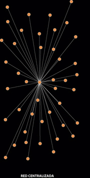 La destrucción del nodo central inutiliza la redAporta una capa más de tolerancia a fallos de nodos centrales pero sigue siendo vulnerable al poder quedar partes de la red inaccesibles.
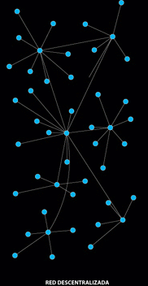 La destrucción de un nodo inutiliza sólo parte de la redNingún nodo depende de otro para poder hacer llegar su mensaje. Un mismo nodo puede utilizar la ruta que más rápida resulte para la transmisión de la información.
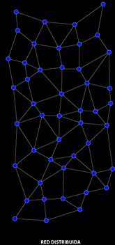 La red distribuia asienta las bases de InternetPara poder transmitir datos por una red se crea un sistema que divide la información en paquetes y se vuelve a ensamblar en destino.
Se crea ARPANET. La primera red telemática basada en conmutación de paquetes tolerante a fallos.
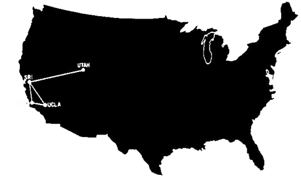 Red ARPANET en el año 1969En 1965 se conectan por primera vez el ordenador TX 2 de Massachusetts con el Q32 computer de California mediante una red conmutada de baja velocidad *.
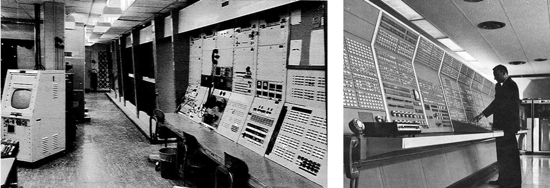 * El ancho de banda de Arpanet era de 56KbpsSe estandarizan protocolos de transmisión de datos que permiten realizar conexiones fiables.
La W3C es una comunidad internacional con el principal objetivo de ser un medio de único de acceso a la información independientemente del hardware, software, infraestructura de red, idioma, cultura, localización geográfica, o habilidad física o mental.
La W3C define mediante consenso una serie de especificaciones técnicas que determinan las tecnologías que se usarán para navegar por la web.
Grupo de independiente de profesionales web dedicados a promover el uso de los estándares web. Creadores del ACID test
Con Jeffrey Zeldman de Alist apart como componente del grupo.1971 - En Cambridge, Massachussets, se envía el primer e-mail. Arpanet dispone de 23 ordenadores en aquel momento.
En primer plano vemos el ordenador BBN-TENEXA (BBNA) (64k), que fue el receptor del primer correo electrónico. Al fondo, el ordenador BBN-TENEXB (BBNB) (48k), que fue el que envió dicho correo electrónico. A la izquierda, vemos una terminal Teletype KSR-33 donde se imprimió el e-ma.1971 - Se transmite el primer virus por la red (Creeper).
A partir de este virus se creó para eliminarlo el programa Reaper, que tenía la capacidad de distribuirse a los equipos infectados tan rápido como el virus.
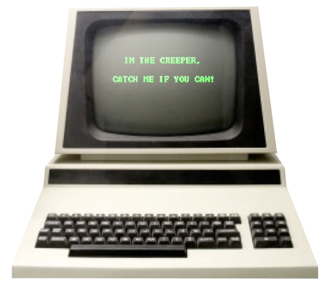1973 - Inglaterra y Noruega se unen a Arpanet con un ordenador cada uno.
1974 - Se utiliza por primera vez la palabra Internet
1976 - Se desarrollan los cables coaxiales Ethernet que mejoran la velocidad de las conexiones.
Desarrollado por Bob Metacalfe en Xerox PARC en 19731978 - Nace el SPAM. Se envía el primer mensaje de e-mail no solicitado.
1982 - Nace el EMOTICONO. Scott Fahlman propone utilizar el símbolo :-) después de una broma.
1983 - Se introduce el protocolo TCP/IP de forma obligatoria a todos los ordenadores que forman la red Arpanet.
1989 - Tim Berners Lee crea la primera página web basada en hipertexto donde explicaba el funcionamiento de la WWW. La función inicial de la WWW fue la de difundir los resultados de las investigaciones científicas del CERN.
Esta es la primera página web en su URL original.
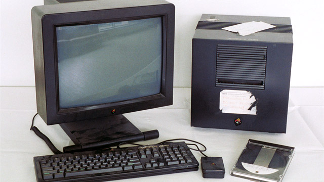 Imagen del primer servidor web del mundo1993 - Mosaic Communications Corporation crea Mosaic, el primer navegador web con interfaz gráfica.
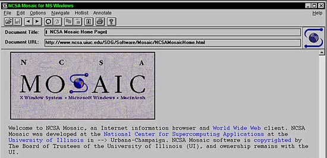...y un año más tarde nace su sucesor: Netscape Navigator
1995 - Se lanza YAHOO, el primer indexador de la WWW.
Su acrónimo viene de Yet Another Hierarchical Officious Oracle
1995 - Nace Amazon, el primer e-commerce de Internet con un catálogo de 1 millón de libros.
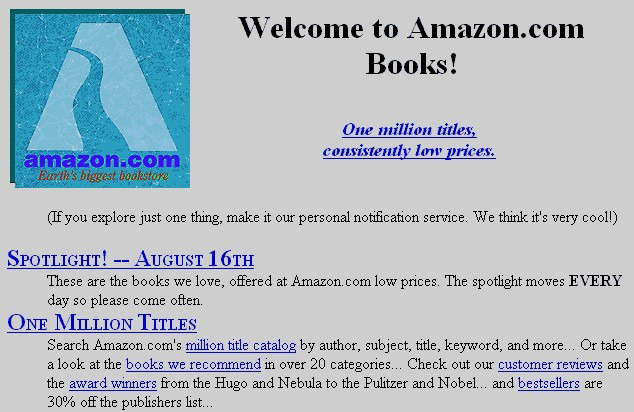1995 - Microsoft lanza Windows 95. La primera versión no incluía de serie el protocolo TCP/IP instalado ni Internet Explorer.
Un año más tarde lanzan Windows 95 SP2
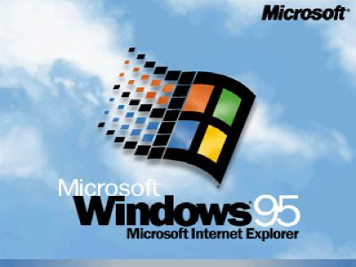1997 - Apple publica su web. En una época en la que se encontraba cerca de la bancarrota y Steve Jobs se reincorpora a la compañía.
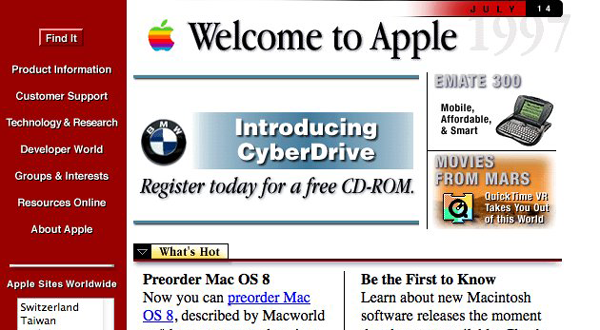1998 - Sergey Brin y Larry Page lanzan Google.
El diseño es así de sencillo porque ninguno de los dos sabía HTML
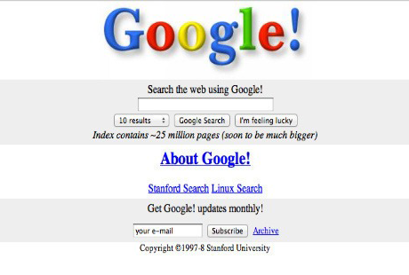1999 - Internet alcanza la cifra de 1 Millón de usuarios.
2000 - Internet alcanza la cifra de 50 Millones de usuarios.
2001 - Se crea Wikipedia. La primera enciclopedia colectiva del mundo.
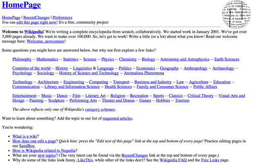2003 - Nacen Wordpress, LinkedIn, MySpace, Skype...
Se empieza a hablar de la web 2.0.
2004 - Google lanza GMail. La primera aplicación web de correo que permitía almacenar 1GB.
Internet alcanza los 1.000 Millones de usuarios.
2004 - En este mismo año Facebook nace como un directorio online de estudiantes de las universidades americanas.
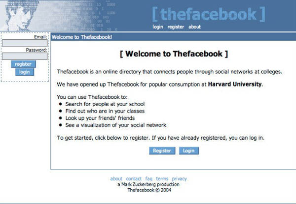2005 - Youtube. La primera versión estaba destinada a buscar pareja al estilo
Hot or Not, similar a lo que hizo Zuckenberg inicialmente con The Facebook.
Internet alcanza los 1.000 Millones de usuarios.
2006 - Twitter. Su primera versión tampoco tenía mucho que ver con la actual. Su claim era "What are you doing now?".
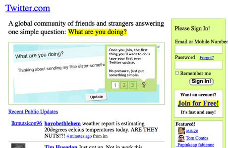2008 - Google crea Chrome. Aporta la novedad de navegar en modo incógino, permite extensiones y rápidamente se adopta como el navegador por defecto por los desarrolladores por su velocidad ejecutando javascript.
Internet alcanza los 1.000 Millones de usuarios.
Este render engine de Microsoft se usó en todos los IE hasta la versión 9.
Las versiones 10 y superiores se basan en Lynx.
No soportaba estándares web. La representación del mismo código en el resto de motores era inconsistente.
Creado para Netscape Navigator 1.0 en diciembre de 1994. Mejorado por Mozilla Foundation y ya con el nombre de Gecko, pasó a formar parte de Firebird y posteriormente de Firefox y el cliente de correo Thunderbird. Multiplataforma y web standards compliant.
Basado en Konkeror de KDE Linux. Modificado por Apple e introducido en Safari en 2003. A partir de entonces deja de ser Software Libre.
No se libera completamente hasta el 2010 con el lanzamiento de Webkit2El sucesor de Trident. Mejor rendimiento, mayor soporte de estándares web y disponible sólo para Windows 7 o superior.
La comunidad Microsoft pierde su etiqueta mítica: Marquee El Render Engine Lynx no tiene logo. Este me ha parecido bonito.Desarrollado por Google en 2013 como parte del proyecto open source Chromium. Pasa a formar parte de Chrome v28 y Opera v15. Una de sus características es que mejora el multi-proceso y pretende acabar con los vendor prefixes
Página oficial
Esquema simplificado de conexión bidireccional a un servidor web.